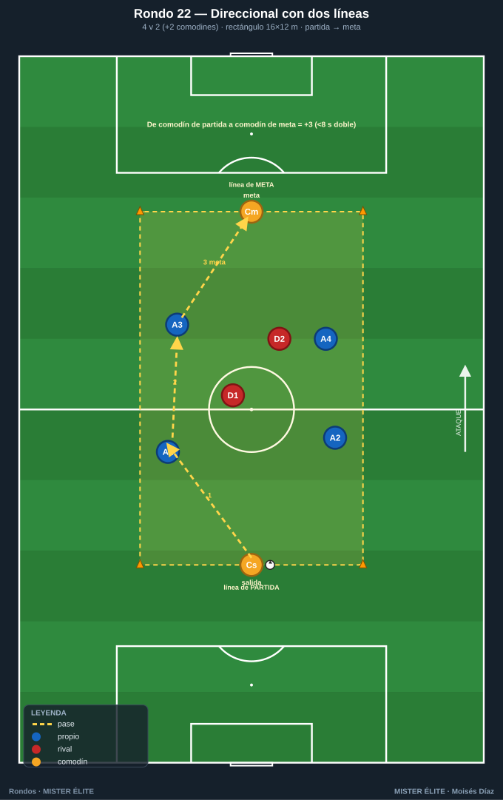
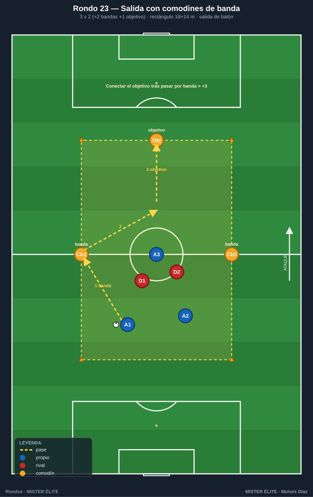
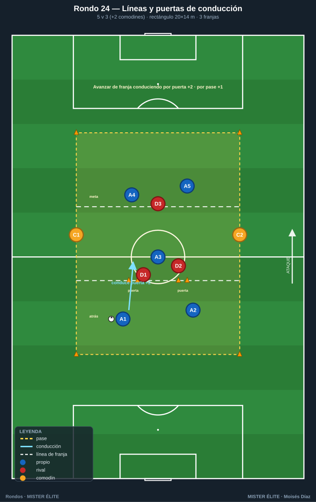
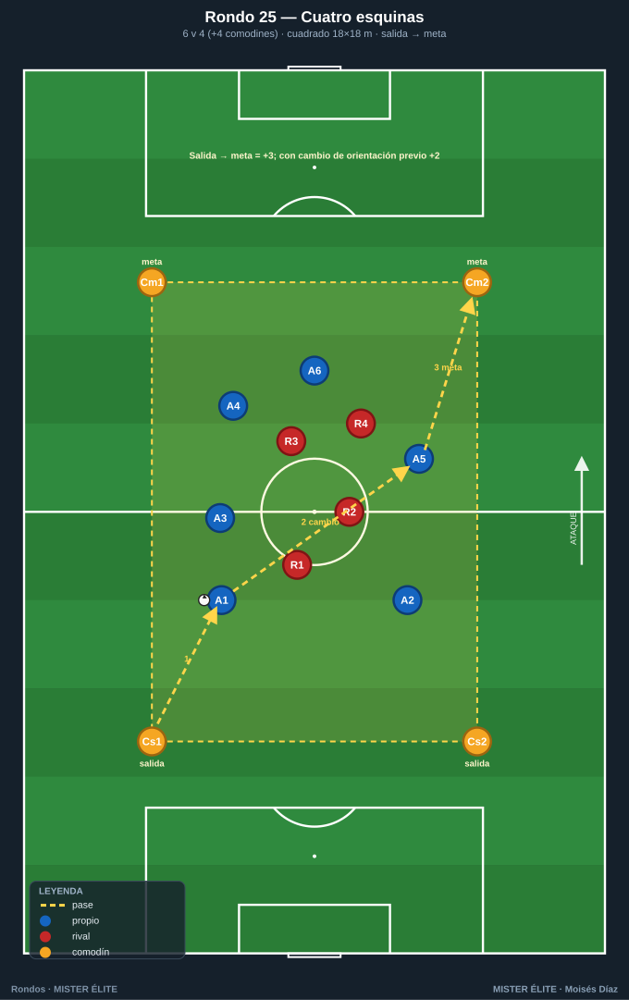
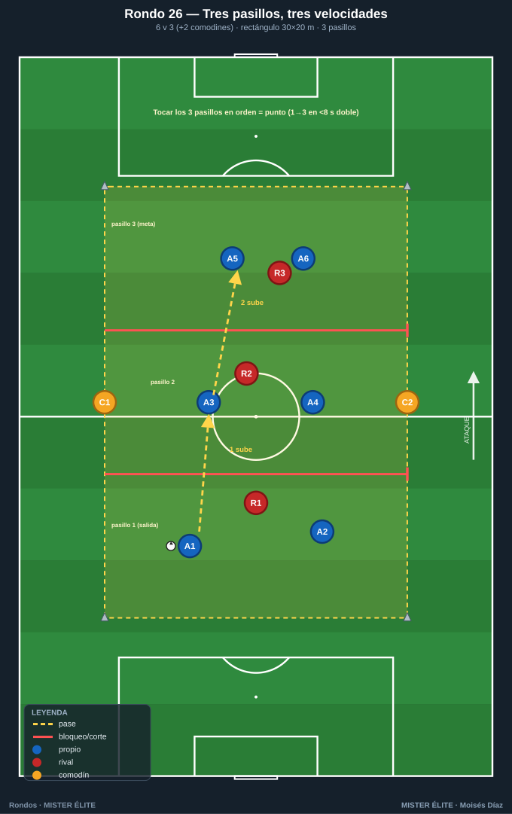
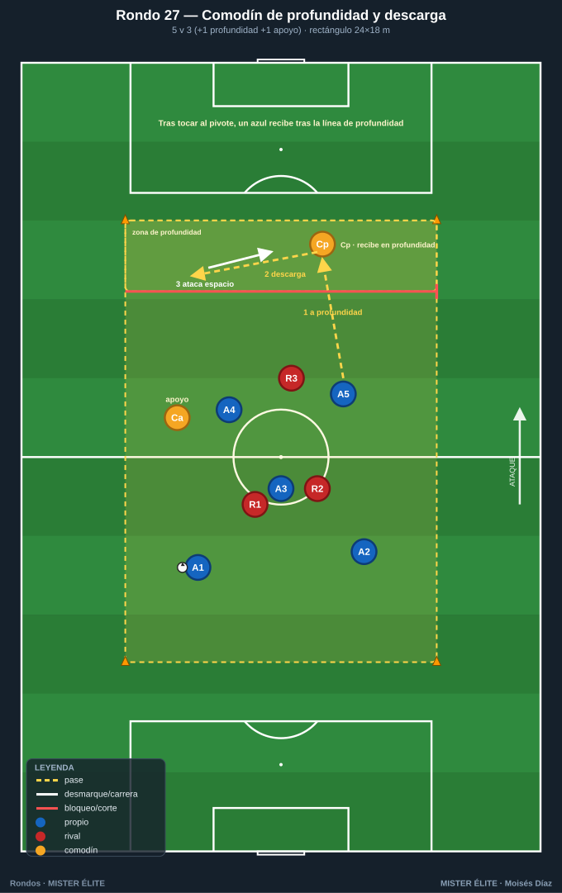
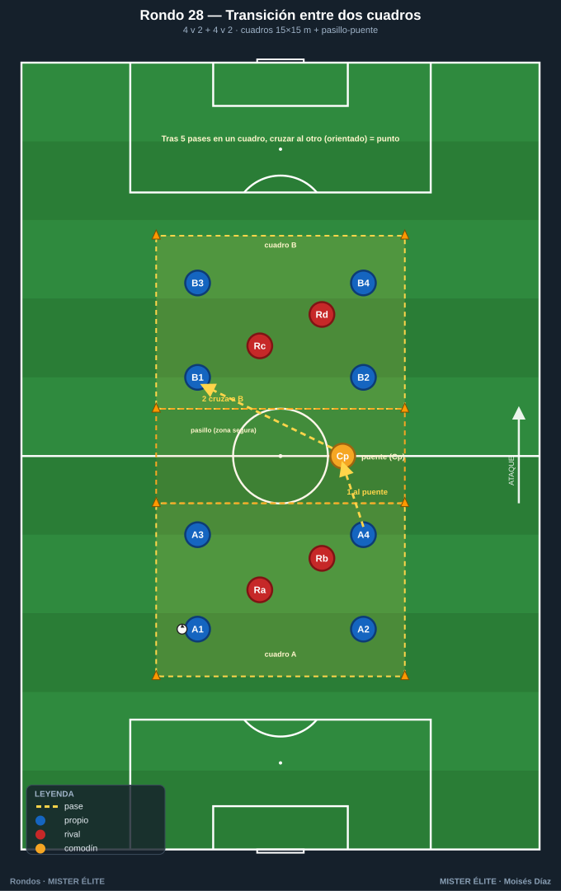

Familia 4 · Con líneas y comodines — progresión y dirección (Rondos 22–28)
Rondos con dirección/progresión real y comodines exteriores que dan el sentido del juego. Puente hacia el juego de posición direccional.
Notación: poseedores = azules, defensores = rojos, comodines = ámbar. Espacio con conos; flechas según
README.
Rondo 22 — "Rondo direccional con dos líneas" (4v2 progresivo)
Objetivo - Táctico: progresar de una línea de partida a una línea de meta superando a dos defensores; dirección clara. - Cognitivo: decidir entre conservar o progresar según la presión.
Organización - Relación: 4 v 2 + 2 comodines exteriores (uno tras cada línea). - Espacio: rectángulo 16×12 m con línea de partida y línea de meta marcadas. - Material: 1 balón, 6 conos, petos (4 azul, 2 ámbar, 2 rojo).

Desarrollo 1. Los azules salen desde el comodín de la línea de partida y deben progresar hasta el comodín de la línea de meta. 2. Los 2 rojos defienden el avance. 3. Los comodines exteriores apoyan salida y llegada (a 1 toque).
Provocaciones (medibles) - +3 por llegar de comodín de partida a comodín de meta. - Si pierden, vuelven a empezar desde la línea de partida. - Progresión en menos de 8 s = punto extra.
Variantes (fácil → difícil) - Fácil: 18×12, comodines a 2 toques. - Medio: 16×12, progresión normal. - Difícil: 14×12 + 4v3.
Coaching - "El rondo tiene una dirección: no es conservar, es llegar." - "Usa los comodines de salida para fijar y progresar limpio." - Orientación del primer control hacia la meta, no hacia atrás.
Duración / series: 4×3 min. Rotar defensores.
Rondo 23 — "Salida en superioridad con comodines de banda" (3v2 + bandas + objetivo)
Objetivo - Táctico: salida de balón desde atrás bajo presión, usando las bandas para progresar (transferencia a la primera fase de construcción). - Cognitivo: elegir la banda libre para salir.
Organización - Relación: 3 v 2 + 2 comodines de banda + 1 comodín-objetivo delante. - Espacio: rectángulo 18×14 m; 2 comodines en bandas, 1 comodín-objetivo en la línea de meta. - Material: 1 balón, 6 conos, petos (3 azul, 2 ámbar banda, 1 ámbar objetivo, 2 rojo).

Desarrollo 1. Los 3 azules inician la salida en superioridad sobre los 2 rojos. 2. Progresan apoyándose en bandas y buscan conectar con el comodín-objetivo avanzado. 3. Los rojos presionan la salida intentando robar en la primera línea.
Provocaciones (medibles) - +3 por conectar con el comodín-objetivo tras pasar por al menos una banda. - Salir jugado: balón directo al objetivo sin pasar por banda = no puntúa. - Robo de rojos en la primera línea = +2 rojos.
Variantes (fácil → difícil) - Fácil: 4v2, bandas a 2 toques. - Medio: 3v2. - Difícil: 3v3 (igualdad).
Coaching - "Sal jugando: la banda libre es tu salida, no el pelotazo." - "Fija al presionador y abre a la banda contraria." - Comodín-objetivo: ofrecerse cuando la salida ya superó la presión.
Duración / series: 4×3,5 min. Rotar defensores y objetivo.
Rondo 24 — "Rondo con líneas y porterías de conducción" (5v3 progresivo)
Objetivo - Táctico: progresar por líneas conduciendo o pasando a través de puertas de conducción; combinar conservar y avanzar. - Cognitivo: leer si conviene conducir el espacio libre o pasar.
Organización - Relación: 5 v 3 + 2 comodines exteriores. - Espacio: rectángulo 20×14 m dividido en 3 franjas (atrás–medio–meta); 2 puertas de conducción (2 m) en la franja media. - Material: 1 balón, conos (incl. 2 puertas), petos (5 azul, 2 ámbar, 3 rojo).

Desarrollo 1. Los azules conservan en la franja de atrás y deben progresar a la franja de meta. 2. Para avanzar entre franjas, conducen por una puerta o pasan a un compañero ya situado en la franja avanzada. 3. Los 3 rojos defienden el avance por franjas.
Provocaciones (medibles) - +2 por avanzar de franja conduciendo por una puerta; +1 por avanzar mediante pase. - Llegar a la franja de meta y conectar con un comodín = +3. - No volver a la franja de atrás dos veces seguidas.
Variantes (fácil → difícil) - Fácil: 5v2, puertas anchas (3 m). - Medio: 5v3, puertas de 2 m. - Difícil: 5v4 + progresar en menos de 10 s.
Coaching - "Si tienes espacio, condúcelo; si no, pásalo: las dos progresan." - "La puerta de conducción es una invitación a atacar el espacio." - Apoyos en la franja siguiente preparados para recibir entre líneas.
Duración / series: 4×3,5 min. Rotar el trío defensor.
Rondo 25 — "Posesión direccional con comodines en las cuatro esquinas" (6v4 + 4 comodines)
Objetivo - Táctico: combinar cambio de orientación + progresión direccional con comodines en las 4 esquinas; síntesis de la familia. - Cognitivo: gestionar muchas opciones (4 comodines) y elegir la que progresa.
Organización - Relación: 6 v 4 + 4 comodines (uno por esquina, ámbar). - Espacio: cuadrado 18×18 m; dos esquinas de un lado = "meta", dos del otro = "salida". - Material: 1 balón, 4 conos, petos (6 azul, 4 ámbar, 4 rojo).

Desarrollo 1. Los 6 azules conservan en superioridad con apoyo de las 4 esquinas; los 4 rojos presionan. 2. El objetivo es progresar de las esquinas de salida a las de meta, pudiendo cambiar de orientación para encontrar el lado libre. 3. Combina conservación, cambio de orientación y progresión direccional.
Provocaciones (medibles) - +3 por conectar una esquina de salida con una de meta en la misma posesión. - +2 adicional si en esa posesión hubo un cambio de orientación antes de progresar. - Comodines de esquina a 1 toque, fijos.
Variantes (fácil → difícil) - Fácil: 6v3, comodines a 2 toques. - Medio: 6v4. - Difícil: 6v5 + 2 toques a los azules interiores.
Coaching - "Tienes cuatro apoyos: el bueno es el que está libre y te hace progresar." - "Cambia de orientación para abrir, luego progresa a la meta." - Cabeza arriba: cuatro esquinas = mucha información, prioriza la que avanza.
Duración / series: 4 series de 4 min. Rotar comodines y defensores. Ideal como cierre de bloque.
Rondo 26 — "Tres pasillos, tres velocidades"
Objetivo - Táctico: progresión orientada con cambio de ritmo; reconocer cuándo conservar y cuándo acelerar al saltar de zona. - Cognitivo: toma de decisiones sobre la dirección de juego.
Organización - Relación: 6 v 3 (+2 comodines). - Espacio: rectángulo 30×20 m dividido en 3 pasillos horizontales de 10 m (líneas de conos que cruzan el ancho). - Material: 12 conos (delimitar + 2 líneas internas), petos de 3 colores, balones en el pasillo de salida.

Desarrollo 1. Se inicia en el pasillo 1 (salida). Objetivo: mínimo 3 pases por pasillo y luego progresar al siguiente cruzando la línea con pase filtrado o conducción. 2. Los comodines ámbar de banda apoyan, pero solo devuelven hacia el pasillo del balón o el siguiente (nunca dos zonas atrás). 3. Balón controlado al pasillo 3 = 1 punto, reinicio desde el 1. Si los rojos roban e intentan sacarlo del rectángulo, rota un rojo por el azul que perdió.
Provocaciones (medibles) - Para puntuar hay que tocar los 3 pasillos en orden ascendente. - Máx. 2 toques en pasillo central y final; libres en el de salida. - Prohibido el pase que retroceda más de un pasillo (penaliza con pérdida). - Bonus: progresar de pasillo 1 a 3 en menos de 8 s vale doble.
Variantes (fácil → difícil) - Fácil: 7v2, toques libres, comodines también en pasillos. - Medio: la descrita (6v3 + 2). - Difícil: 5v4; prohibido que dos azules ocupen el mismo pasillo más de 3 s.
Coaching - Orientar el primer control hacia la línea a superar; el hombre del pasillo de destino se ofrece ANTES del pase; cabeza arriba para leer qué pasillo está libre de rojos; acelerar el ritmo justo en el salto de zona.
Duración / series: 4 series de 3 min, 90 s de descanso. Total ~18 min.
Rondo 27 — "Comodín de profundidad y descarga"
Objetivo - Táctico: progresión con apoyo en punta; jugar de cara y de espaldas; el comodín como referencia para fijar y descargar (pared / tercer hombre).
Organización - Relación: 5 v 3 (+1 comodín de profundidad +1 comodín de apoyo). - Espacio: rectángulo 24×18 m con una línea de meta al fondo. Comodín de profundidad fijo en los últimos 4 m; comodín de apoyo móvil. - Material: 10 conos, petos 3 colores, balones en la partida opuesta a la profundidad.

Desarrollo 1. Los azules circulan para encontrar al comodín de profundidad de espaldas. 2. El comodín de profundidad recibe, aguanta o devuelve de primeras al comodín de apoyo o a un azul que ataca el espacio (tercer hombre). 3. Se puntúa cuando, tras tocar el comodín de profundidad, un azul recibe el balón controlado por detrás de la línea de profundidad.
Provocaciones (medibles) - El comodín de profundidad juega a 1 toque. - El punto solo vale si el pase a profundidad lo da un azul, no el comodín de apoyo. - Si los rojos roban y conservan 4 pases entre ellos = 1 punto rojo. - Combo bonus: pared con el comodín de profundidad = punto doble.
Variantes (fácil → difícil) - Fácil: comodín de profundidad a 2 toques y puede recibir de cara. - Medio: la descrita. - Difícil: añadir 1 rojo (5v4) que vigila exclusivamente al comodín de profundidad.
Coaching - El comodín de profundidad fija al rojo con el cuerpo antes de descargar; el tercer hombre arranca cuando el balón viaja hacia el pivote, no después; la descarga busca al jugador orientado hacia la profundidad.
Duración / series: 5 series de 2:30, 75 s descanso. Total ~17 min.
Rondo 28 — "Rondo de transición entre dos cuadros"
Objetivo - Táctico: transición entre zonas y cambio de orientación largo; encadenar conservación en una zona y progresión a otra con apoyo de comodín-puente.
Organización - Relación: dos cuadros 4 v 2 unidos por un pasillo neutral de 6 m con 1 comodín-puente ámbar dentro. - Espacio: cada cuadro 15×15 m, separados por el pasillo (total ~36 m de largo). - Material: 12 conos (2 cuadros + pasillo), 1 peto ámbar, petos. Balón empieza en el cuadro A.

Desarrollo 1. Los 4 azules del cuadro A conservan ante sus 2 rojos. 2. Tras mínimo 5 pases, deben cambiar de cuadro pasando por el comodín-puente (o con pase directo que cruce el pasillo). 3. Cuando el balón entra en el cuadro B, ese equipo conserva otros 5 pases y devuelve. Punto por cada transición A↔B con los 5 pases previos. El comodín-puente no puede ser presionado dentro del pasillo (zona segura), pero juega a 1 toque.
Provocaciones (medibles) - Hay que dar los 5 pases en el cuadro antes de cruzar. - El cambio de cuadro debe ir orientado: el receptor en B juega de cara, no de espaldas. - Si los rojos de un cuadro roban e intentan sacar el balón del cuadro = 1 punto rojo y rotan. - 2 transiciones seguidas sin pérdida = punto extra.
Variantes (fácil → difícil) - Fácil: pasillo más ancho, comodín a 2 toques, solo 3 pases exigidos. - Medio: la descrita. - Difícil: prohibido pasar por el comodín una de cada dos transiciones (obliga al cambio directo por encima de la presión).
Coaching - Preparar el cuerpo para recibir orientado hacia el cuadro destino; el comodín-puente como acelerador, no como freno; el equipo que recibe se abre al ancho del cuadro ANTES de que llegue el balón.
Duración / series: 4 series de 3:30, 90 s descanso. Total ~20 min.
MISTER ÉLITE — Moisés Díaz